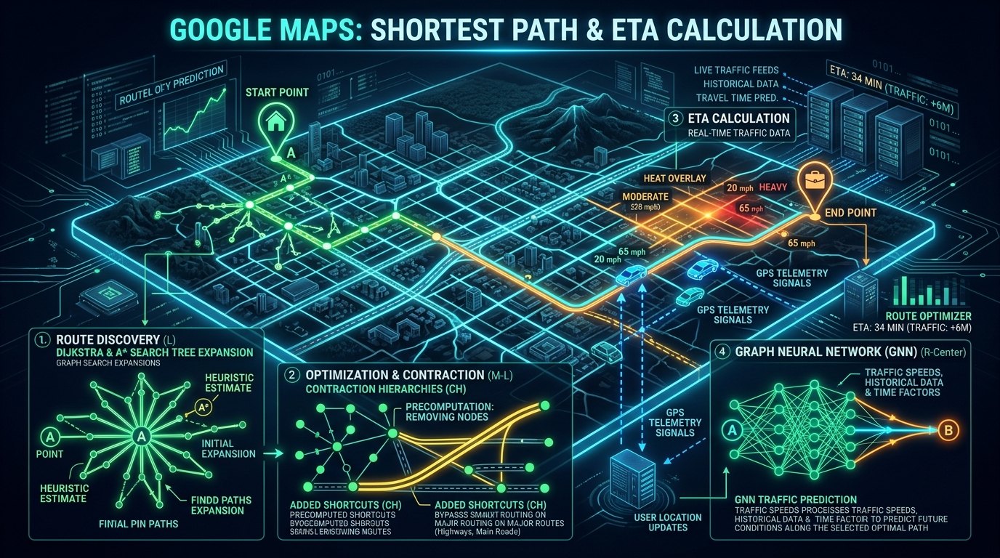
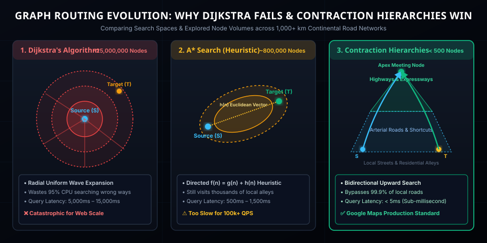

You open Google Maps, type "Delhi to Bengaluru" (2,170 kilometers) or "New York to Los Angeles" (4,500 kilometers), and hit Navigate. In less than 30 milliseconds, Google Maps accomplishes what seems computationally impossible:
- Draws the exact turn-by-turn path through over 100 million road segments and intersections.
- Predicts your arrival time down to the minute, taking into account traffic snarls hundreds of kilometers ahead.
- Provides two alternative routes showing time differences (+18 min, +42 min) and toll savings.
If Google ran classic computer science textbook algorithms like Dijkstra or standard Breadth-First Search (BFS) across a global road graph, your request would exhaust gigabytes of RAM, visit tens of millions of intersections, and take 15 to 45 seconds per search. At Google’s scale of 1+ billion active users and over 50,000 route requests per second, their servers would melt.
So how does Google Maps do it in under 15 milliseconds? The answer is a brilliant orchestration of Contraction Hierarchies (CH), Customizable Route Planning (CRP), Hidden Markov Models for Map Matching, and DeepMind Graph Neural Networks (GNNs).

Figure 1: Google Maps Sub-30ms Routing Engine: Contraction Hierarchies, GPS Telemetry Streaming, Dynamic Edge Costing, and DeepMind Graph Neural Networks.
1. Planet Earth as a Directed Multi-Graph
Before finding a path, the physical world must be converted into a mathematical data structure. Google Maps models the world's road network as a directed, weighted multi-graph $G = (V, E)$:
- Vertices (Nodes, $V$): Intersections, roundabouts, highway on/off-ramps, dead-ends, and road attribute transition points.
- Edges (Segments, $E$): The street or highway segment connecting two nodes.
- Edge Weights ($W$): The traversal cost. Crucially, the cost is not physical Euclidean distance in meters! It is Dynamic Travel Time: $$\text{Cost}(e) = \frac{\text{Length}(e)}{\text{Current Speed}(e)} + \text{Turn Penalties} + \text{Toll / Traffic Light Overhead}$$
Why Road Graphs Are Brutally Complex
In theoretical computer science, graphs are simple matrices. In the physical world, road networks break simple assumptions:
- One-Way Streets & Divided Expressways: The road between Node $A$ and Node $B$ is directed ($A \to B \neq B \to A$).
- Turn Restrictions: You cannot simply jump from any incoming edge to any outgoing edge. A "No Left Turn between 8:00 AM – 11:00 AM" rule means the graph must store turn costs or be transformed into an Edge-Expanded Graph.
- Non-Planar Topology: Overpasses, underpasses, bridges, and double-decker expressways cross each other in 2D space without intersecting in 3D. A flat 2D intersection check would cause cars to jump off bridges!
2. Why Classic Dijkstra & A* Fail at Continental Scale
1. Dijkstra's Algorithm: The Blind Radial Explosion
Edsger Dijkstra published his famous shortest path algorithm in 1959. It maintains a priority queue of unvisited nodes, greedily exploring the closest unvisited node:
$$\text{Time Complexity: } \mathcal{O}((V + E) \log V)$$
The Fatal Flaw: Dijkstra is completely uniform and directional-blind. If you want to drive from Paris to Berlin (East), Dijkstra explores roads West toward Normandy, North toward Belgium, and South toward Lyon with equal priority. The search frontier expands as an ever-growing circle:
- A 1,000 km journey across Europe or North America requires evaluating over 25 Million nodes.
- At ~200 nanoseconds per heap operation, Dijkstra takes 5 to 12 seconds per query.
2. A* Search: Adding Directional Guidance
A* improves on Dijkstra by adding an admissible heuristic $h(n)$—the straight-line (Euclidean / Haversine) distance from node $n$ to the target, divided by the maximum speed limit:
$$f(n) = g(n) + h(n)$$
where $g(n)$ is the true accumulated cost from the origin to node $n$, and $h(n)$ pulls the search tree toward the destination like a magnetic field.
Why A* is Still Not Enough: While A* morphs the circular search wave into an ellipse pointed toward the target, it still explores hundreds of thousands of residential side streets, alleys, and cul-de-sacs along the highway corridor. A cross-country query still takes 800ms to 2,000ms—still orders of magnitude too slow for a real-time web API.

Figure 2: Search Space Comparison: Dijkstra (blind radial wave, 25M nodes), A* (heuristic ellipse, 800k nodes), and Contraction Hierarchies (bidirectional upward cone, <500 nodes).
3. The Breakthrough: Contraction Hierarchies (CH)
How does a human plan a drive from San Diego to Seattle?
"You take your local neighborhood street to a collector road, merge onto Interstate 5 North, drive 1,200 miles on I-5, exit near Seattle onto an arterial avenue, and navigate the final 400 meters on residential streets."
You never contemplate turning into a suburban cul-de-sac in Sacramento or Portland while cruising on I-5. You intuitively drop the local road network from your mental search space!
Contraction Hierarchies (CH), invented by Geisberger et al. in 2008, formalizes this exact intuition mathematically into two phases: Offline Preprocessing and Online Querying.
Phase 1: Preprocessing (Node Contraction & Shortcut Insertion)
- Every node in the continental graph is assigned an importance rank from $1$ to $N$. Minor residential dead-ends and quiet neighborhood intersections receive low ranks; arterial road junctions receive medium ranks; major highway interchanges (e.g., NH-44, I-95, Autobahn) receive the highest ranks.
- Nodes are contracted (removed from the graph) one by one in increasing order of rank.
- The Shortcut Invariant: When node $v$ is contracted, the algorithm checks all incoming edges $(u \to v)$ and outgoing edges $(v \to w)$. If the path $u \to v \to w$ was the unique shortest path between $u$ and $w$, a direct shortcut edge $(u \to w)$ is inserted with weight: $$\text{Weight}(u \to w) = \text{Weight}(u \to v) + \text{Weight}(v \to w)$$
Once all nodes are contracted, the original graph is augmented with precomputed shortcut edges that bypass all minor roads!
Phase 2: Online Query (Bidirectional Upward Dijkstra)
When you request a route from Source ($S$) to Target ($T$):
- Forward Search: Runs Dijkstra starting from $S$, but with one strict rule: only follow edges leading to nodes of HIGHER rank ($u \to v$ where $\text{Rank}(v) > \text{Rank}(u)$).
- Backward Search: Runs Dijkstra backwards starting from $T$, following incoming edges from nodes of HIGHER rank.
- The Meeting Point: Because both searches only travel upwards in the hierarchy, they quickly climb out of local neighborhoods and meet at the highest-ranked highway apex node!
| Routing Algorithm | Nodes Explored (1,000 km) | Query Execution Time | Speedup vs Dijkstra |
|---|---|---|---|
| Standard Dijkstra | ~25,000,000 nodes | ~8,500 ms | 1x (Baseline) |
| Bidirectional A* (Euclidean) | ~850,000 nodes | ~750 ms | ~11x faster |
| Contraction Hierarchies (CH) | ~400 to 1,200 nodes | < 2.5 ms | ~3,400x faster |
4. The Live Traffic Problem: Customizable Route Planning (CRP)
There is a catch: Vanilla Contraction Hierarchies take hours to precompute.
If an accident happens on the highway or a thunderstorm causes waterlogging, the travel time doubles. Re-running hours of precomputations across hundreds of millions of nodes every 2 minutes is computationally impossible.
Google Maps solves this using Customizable Contraction Hierarchies (CCH) and Customizable Route Planning (CRP) (also known as Multilevel Metric Partitioning):
┌────────────────────────────────────────────────────────────────────────┐
│ 1. Metric-Independent Topology (Static - Computed Once a Month) │
│ Road geography, physical coordinates, turns, speed limits │
└──────────────────────────────────┬─────────────────────────────────────┘
▼
┌────────────────────────────────────────────────────────────────────────┐
│ 2. Graph Partitioning into Multi-Level Cells (Inertial Flow / KaHIP) │
│ Divides the world into small nested cells (~250 nodes per cell) │
└──────────────────────────────────┬─────────────────────────────────────┘
▼
┌────────────────────────────────────────────────────────────────────────┐
│ 3. Metric Customization (Dynamic - Recomputed Every 30 to 60 Seconds) │
│ Live speeds, lane closures, weather & accident delays │
│ Updates ONLY boundary shortcut distance matrices in milliseconds! │
└────────────────────────────────────────────────────────────────────────┘
By decoupling the graph topology (which rarely changes) from the traversal metric (which changes every minute), Google can recalculate live traffic weights across entire continents in under 1 second using SIMD parallelized vector instructions.
5. How Google Knows Traffic: Floating Car Data & Map Matching
Where does Google get accurate, up-to-the-second speed data for billions of road segments?
1. Floating Car Data (FCD)
Hundreds of millions of Android phones, Android Auto devices, and iOS Google Maps users continuously transmit anonymized telemetry packets:
- GPS Coordinate (Latitude, Longitude)
- Timestamp
- Instantaneous Speed (via accelerometer + GPS Doppler shift)
- Heading / Compass Direction
2. The Map Matching Problem (Hidden Markov Models)
Consumer GPS chips have an error radius of 5 to 15 meters. If you are driving on an elevated expressway and a service road runs directly underneath it, a raw GPS ping might place you on either road!
Google Maps runs Hidden Markov Models (HMM) with the Viterbi Algorithm to decode the true trajectory:
- Emission Probability: How close is the raw GPS ping to candidate road segments?
- Transition Probability: Given the car's speed and heading, is it physically possible to move from road segment $R_1$ to road segment $R_2$ in 3 seconds? (e.g., jumping from an expressway to a parallel alleyway would violate physical acceleration limits).
6. Next-Gen ETA: DeepMind Graph Neural Networks (GNNs)
In traditional navigation systems, your ETA is estimated using simple point-in-time speeds: if a road is 10 km long and currently moving at 60 km/h, the system predicts 10 minutes.
The Problem: By the time you reach that 10 km stretch 45 minutes into your trip, rush hour may have peaked and traffic may have come to a complete standstill!
To solve this, Google collaborated with Google DeepMind to deploy Graph Neural Networks (GNNs) for predictive travel times:
| Component | Traditional Navigation | DeepMind GNN Architecture |
|---|---|---|
| Spatial Representation | Isolated, independent road edges. | Connected "Supersegments" capturing topological highway flow and bottleneck ripple effects. |
| Temporal Horizon | Static instantaneous current speed. | Dynamic spatiotemporal forecasting: predicts traffic propagation 10 to 60 minutes into the future. |
| Context Inputs | Speed only. | Historical trends, road quality, speed limits, live weather, construction schedules, and incident reports. |
| ETA Accuracy Impact | High error rate during transition hours. | Up to 50% reduction in negative ETA errors in major metropolitan areas (Berlin, Tokyo, NYC, Mumbai). |
7. Code Simulation: How Shortcut Edges Are Formed
Below is a clean Node.js / JavaScript demonstration showing the fundamental mathematical principle of Node Contraction: removing a low-rank vertex and inserting shortcut edges to preserve shortest path invariants.
/**
* Gyaan Ki Baat: Minimal Contraction Hierarchy Simulation
* Illustrates shortcut insertion during node contraction.
*/
class RoadGraph {
constructor() {
this.edges = new Map(); // node -> [{ to, weight }]
this.shortcuts = [];
}
addEdge(u, v, weight) {
if (!this.edges.has(u)) this.edges.set(u, []);
this.edges.get(u).push({ to: v, weight });
}
getNeighbors(u) {
return this.edges.get(u) || [];
}
/**
* Contract a node v: Remove it from active search
* and insert shortcuts between predecessors and successors.
*/
contractNode(v) {
console.log(`\n[Contraction] Contracting Node: ${v}...`);
// Find all incoming edges (u -> v)
const incoming = [];
for (const [u, neighborList] of this.edges.entries()) {
for (const edge of neighborList) {
if (edge.to === v) incoming.push({ from: u, weight: edge.weight });
}
}
// Find all outgoing edges (v -> w)
const outgoing = this.getNeighbors(v);
// Evaluate if u -> v -> w needs a shortcut
for (const inEdge of incoming) {
for (const outEdge of outgoing) {
const u = inEdge.from;
const w = outEdge.to;
if (u === w) continue; // Skip self-loops
const contractedPathWeight = inEdge.weight + outEdge.weight;
// In a real CH engine, a local "witness search" verifies if
// an alternative path <= contractedPathWeight already exists.
console.log(` -> Inserting Shortcut Edge: ${u} ➔ ${w} (Weight: ${contractedPathWeight}s)`);
this.addEdge(u, w, contractedPathWeight);
this.shortcuts.push({ from: u, to: w, weight: contractedPathWeight, bypassed: v });
}
}
// Remove node v from the graph
this.edges.delete(v);
}
}
// Demo Execution: Local residential intersection bypassed
const cityGrid = new RoadGraph();
// Arterial North (A) -> Residential Intersection (B) -> Arterial South (C)
cityGrid.addEdge("Arterial_A", "Local_B", 45); // 45 seconds
cityGrid.addEdge("Local_B", "Arterial_C", 55); // 55 seconds
cityGrid.addEdge("Highway_H1", "Arterial_A", 120);
// Contract the residential intersection
cityGrid.contractNode("Local_B");
console.log("\nGenerated Shortcuts:", cityGrid.shortcuts);
// Query engines now jump Arterial_A ➔ Arterial_C directly in 100s, bypassing Local_B!
8. Multi-Objective & Eco-Routing
The "shortest" or "fastest" path is no longer the only route Google Maps calculates. Today, navigation engines optimize across multiple competing objective functions:
- Fuel-Efficient / Eco-Routing: Driving 110 km/h on a hilly highway consumes more fuel than cruising steadily at 80 km/h on a level expressway. Google computes elevation grade, engine powertrain efficiency (EV vs Hybrid vs Diesel), and constant-speed cruise corridors.
- Alternative Route Diversity (Pareto-Optimality): Riders do not want two routes that share 98% of the same streets. Google filters candidates to generate strictly distinct alternatives: Fastest Route, Toll-Free Route, and Scenic / Minimal Maneuvers Route.
9. Summary & Engineering Key Takeaways
- Dijkstra is Unusable at Web Scale: Blind radial search across 100M+ road segments explodes memory and takes seconds. Heuristic A* improves performance but still explores thousands of irrelevant local alleys.
- Hierarchy is the Superpower: By contracting minor roads and inserting shortcut edges (Contraction Hierarchies), the search space drops from 25 million nodes to under 1,000 nodes, reducing query latency to < 3 milliseconds.
- Decouple Topology from Metrics: Customizable Route Planning (CRP) separates physical map geometry from dynamic traffic speeds, allowing real-time network re-weighting in under 1 second.
- Hidden Markov Models Clean Noisy Reality: Viterbi algorithms map noisy GPS pings to exact directional road lanes and elevated highway bridges.
- DeepMind GNNs Predict the Future: Graph Neural Networks forecast traffic ripple effects across supersegments, replacing point-in-time guesses with predictive ETAs.
💬 Join the Discussion
Have you implemented graph algorithms like A*, Dijkstra, or Contraction Hierarchies in your projects? How do you tackle real-time weight updates in distributed systems? Share your insights with me on LinkedIn!